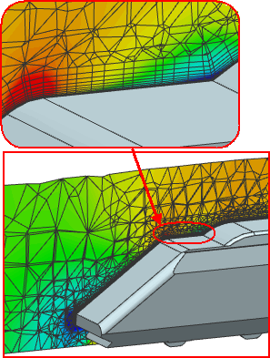

Fluid domain and fluid surface meshing
When you create a flow model, you must specify a fluid volume for the mesh. You must create the 3D mesh using:
-
NX meshing tools in the FEM file.
-
A Fluid Domain
 simulation object.
simulation object.
Within the same model, you can combine both approaches to mesh adjacent fluid volumes. The flow solver automatically connects adjacent fluid volumes when their polygon bodies share faces.
When you use the Fluid Domain simulation object:
-
The solver automatically detects solid bodies that are not part of the fluid domain but obstruct the flow and meshes around them.
-
The solver automatically detects any changes to the arrangement of obstructions in the overall volume when you re-solve and accounts for them
-
You can create boundary layer meshes. Boundary layer meshes are inherently more accurate when modeling boundary layer effects.
Fluid flow around a train using boundary layer fluid domain
You can create two types of Fluid Domain simulation objects:
-
The Fluid Mesh type defines a mesh for general fluid volumes.
-
The Fluid Surface Mesh type lets you modify a Fluid Domain mesh by defining the surface mesh size and boundary layer mesh parameters.
You cannot view a Fluid Domain mesh in the simulation or FEM file automatically or change its display properties during flow model creation. However, you can inspect the Fluid Domain mesh in the Post-Processing Navigator by reviewing:
-
Element size
-
Element skewness
-
Element aspect ratio